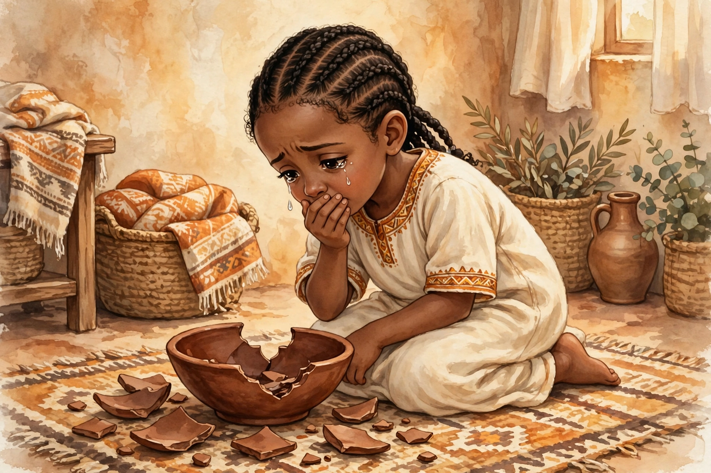

A children's book about a bowl that breaks — and the gold that goes in the cracks. By Peniel Eshetu.
Naya has a bowl she loves. One day, it breaks. She is sure it is ruined — and that she might be, too.
Instead of throwing the pieces away, her grandmother teaches her kintsugi — the old art of mending broken pottery with gold, so the cracks become the most beautiful part.
Four watercolour pages from the book. Turn them slowly.

For children who have had something break — and for the grown-ups reading aloud who need to hear it too: broken is not the end of the story.
Join the Selah Letter for first word when it is ready — and one quiet letter a week until then.
Join the Letter